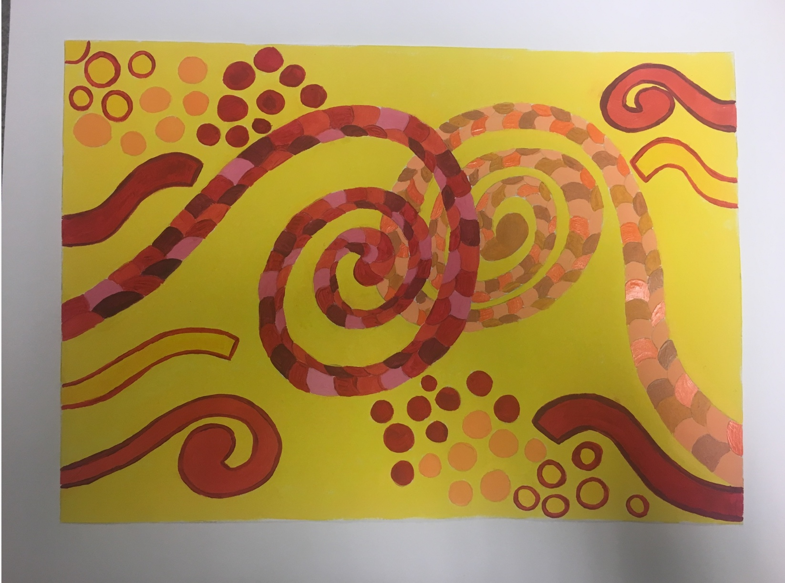
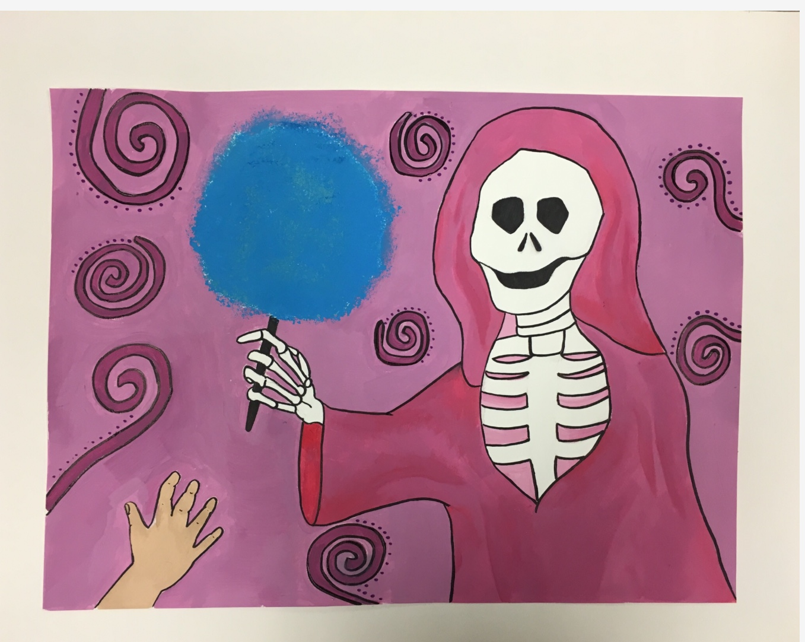

1 / 3

Caption Text
2 / 3

Caption Two
3 / 3

Caption Three
This website will provide examples of my art work, what I like about art, and my inspiration. Feel free to navigate through out the website as you please.